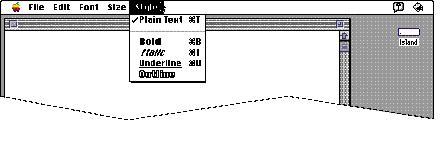
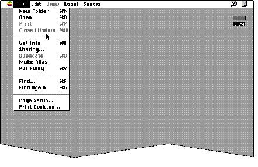
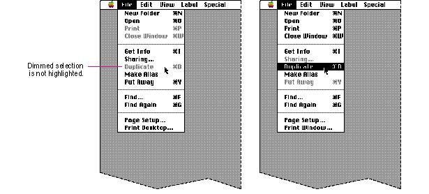

|
Menu Item NamesThis section describes the two major categories of menu items--commands and attributes--and gives examples for you to follow in deciding how to name menu items for your application.You can use different parts of speech to name your menu items depending on what effect they have when the user chooses a specific item. For menu items that act as commands, use verbs (or verb phrases) that declare the action that occurs when the user chooses the item. Some examples are Save, which means save my file, and Copy, which means copy the selected data. Your menu command names should fit into a similar sentence. If the item changes an attribute of a selected object,
use an adjective (or adjective phrase) that describes the
change. Adjectives in menus imply an action. They
should fit into the sentence "Change the selected object or
objects to . . . " For example, when people think of
choosing a font style such as bold, they might think,
"Change the selected text to bold," as they choose the
adjective from the menu. Figure
4-9 shows a menu that contains adjectives Figure 4-9 A menu with adjectives  Use one word for menu item names when possible.
Capitalize the first letter of the first word of each
command and capitalize the important words in phrases. For
more information on the style of language in the
interface, Figure 4-10 Command names properly capitalized  Menus created
using the standard menu definition in the Macintosh Toolbox
display menu items in the system font, which is 12-point
Chicago in the Roman version of system software. The system
font for the primary script system varies depending on the
version of localized system software installed in the
user's computer when multiple script systems are installed.
When a menu item is unavailable, it is displayed in gray
letters. When a user moves the pointer over the dimmed
item, it isn't highlighted. Figure
4-11 shows Figure 4-11 Unavailable items aren't highlighted  |